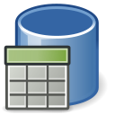

Binärdaten in Postgres

Ein potentieller Kunde hat neulich mit einer Frage dafür gesorgt, dass ich mich tiefgreifender mit der Speicherung und dem Management von Binärdaten in Postgres beschäftigt habe.
Ich habe zunächst Tests mit BLOBs durchgeführt (oder auch bytea - im Gegensatz zu Large Objects). Mittels des Generators für Testdaten in der sQLshell generierte ich in einer bytea-Spalte Daten. Es entstanden 41 Datensätze, bei denen die Größe der Bilder von 45301 bis 818 Byte reichte - insgesamt kamen alle Bilder auf eine Gesamtgröße von 573902 Byte. Zur Feststellung dieser Werte wurden folgende Statements in der sQLshell ausgeführt:
SELECT *,octet_length(___6284997236799771785___.data) from ___6284997236799771785___;
SELECT sum(octet_length(___6284997236799771785___.data)) from ___6284997236799771785___;
Die Größe der Relationen lässt sich mit folgendem Statement ermitteln: Die Größe der Relationen lässt sich mit folgendem Statement ermitteln:
SELECT nspname || '.' || relname AS "relation",
pg_size_pretty(pg_relation_size(C.oid)) AS "size"
FROM pg_class C
LEFT JOIN pg_namespace N ON (N.oid = C.relnamespace)
WHERE nspname NOT IN ('pg_catalog', 'information_schema')
ORDER BY pg_relation_size(C.oid) DESC
LIMIT 20;
Für die Testtabelle kam ich dabei auf 32 KByte - offensichtlich sind darin die Binärdaten nicht enthalten - die Größe inklusive der Binärdaten lässt sich mit folgendem Statement feststellen:
SELECT
table_name,
pg_size_pretty(table_size) AS table_size,
pg_size_pretty(indexes_size) AS indexes_size,
pg_size_pretty(total_size) AS total_size
FROM (
SELECT
table_name,
pg_table_size(table_name) AS table_size,
pg_indexes_size(table_name) AS indexes_size,
pg_total_relation_size(table_name) AS total_size
FROM (
SELECT ('"' || table_schema || '"."' || table_name || '"') AS table_name
FROM information_schema.tables
) AS all_tables
ORDER BY total_size DESC
) AS pretty_sizes
Als Ergebnis ergab sich dabei eine Größe für die Experimentaltabelle von 696 kB.
Anschließend wurde versucht, fast alle Einträge aus der Tabelle zu löschen, um die Auswirkungen auf die Größe der Binärdaten und die Tabellengröße zu beobachten. Die octet_length schrumpft wie erwartet auf 42474 Bytes - die table_size ändert sich jedoch scheinbar nicht: 704 kB.
Als Gegentest habe ich ein Bild mit einer Größe von 3631620 bytes hinzugefügt - damit änderte sich die octet_length auf 3674094 Bytes und die table_size auf 3888 kB. Anschließend wurde diese Zeile wieder gelöscht - dadurch änderten sich die Werte wie erwartet: die octet_length schrumpft auf 42474 und die table_size auf 768 kB.
Anschließend wurde dasselbe Bild wieder hinzugefügt, aber diesmal das Bild in der bestehenden Zeile gegen ein wesentlich kleineres (66KByte) ersetzt. Danach schrumpfte die octet_length wie erwartet auf 109234 - die table_size dagegen erhöht sich sogar noch ein wenig - auf 3960 kB. Die database size verringert sich ebenfalls nicht - sie bleibt bei 12MB.
SELECT pg_size_pretty(pg_database_size('jdbctest'))
Dieser Wert wird mit dem oben stehenden Statement ermittelt - er sinkt erst nach Löschen der Zeile wieder auf 8 MB. Es scheint also so zu sein, dass der einmal allozierte Speicher für eine Zeile alloziert bleibt, bis die Zeile tatsächlich gelöscht wird - interessant...
Nach Anregung durch einen Kollegen testete ich noch das Verhalten wenn das größere Bild durch NULL ersetzt, die Zeile aber nicht gelöscht wird. Nach NULL setzen wird dann das kleinere Bild in der Datenbank gespeichert. Mich hat das Ergebnis überrascht: Wenn man den BLOB erstmal auf NULL setzt und anschließend das kleinere Bild in die Zeile schreibt, verringert sich die Größe der Datenbank entsprechend! Beziehungsweise verringert sich die Größe bereits nach dem NULL setzen und erhöht sich anschließend wieder, wenn ein neues Bild in der betreffenden Zeile gespeichert wird.
Wie verhalten sich ähnliche Tests bei Large Objects? Eine Übersicht über alle LargeObjects in der Datenbank erhält man mittels
select DISTINCT lo.loid from pg_largeobject lo;
Im Test ergab das initial 4 oids (ich hatte bereits ein wenig experimentiert). Das folgende Statement zeigt nicht die Anzahl der Large Objects an:
select count(lo.loid) from pg_largeobject lo;
Das ergab allerdings eine Anzahl von 291. Wenn man allerdings das Resultat von
select lo.loid,length(lo.data) from pg_largeobject lo
anschaut, sieht man viele Einträge - fast alle haben eine Länge von 2048 Bytes. Und das Ergebnis der Ausführung des Statements
select sum(length(lo.data)) from pg_largeobject lo;
stimmt aber mit dem Ergebnis von
select count(lo.data) from pg_largeobject lo;
multipliziert mit 2048 ungefähr überein. Daran sieht man, dass die LOs auf Chunks von 2K Größe aufgeteilt werden. Nunmehr wurde das bereits benutzte große Beispielbild als LO in die Datenbank eingefügt.
Vor dem Hinzufügen ergab sich als Größe der Datenbank: 8784 KBytes Danach betrug dieser Wert: 13MB (die neue OID für dieses LO war: 16527) Die Größe der Los betrug in Summe length(lo.data): 4223032.
Damit waren die Ergebnisse konsistent. (Achtung: diese Werte werden erst nach Commit der Transaktion aktualisiert - LO-Operationen sind nur erlaubt, wenn Autocommit deaktiviert ist!) Auch bei LOs scheint zu gelten: Das überschreiben mit dem kleineren Bild verringert die Größen nicht.
select sum(length(lo.data)) from pg_largeobject lo;
Artikel, die hierher verlinken
Syntaxerweiterungen für den SQL-Editor in der sQLshell
06.08.2016
Nach längerer Zeit gibt es wieder etwas über neue Features der sQLshell zu berichten: Der SQL-Texteditor versteht neue syntaktische Konstrukte.


Vor 5 Jahren hier im Blog
-
Android als Smartcard (NFC) II
05.05.2019
Das letzte Mal war das ganze eher grobe Bastelei. Nachdem ich nun ein neues Smartphone angeschafft habe, wollte ich probieren, ob es inzwischen einfacher funktioniert - und ich wurde über alle Erwartungen hinaus überrascht...
Weiterlesen...
Tags
Android Basteln C und C++ Chaos Datenbanken Docker dWb+ ESP Wifi Garten Geo Git(lab|hub) Go GUI Gui Hardware Java Jupyter Komponenten Links Linux Markdown Markup Music Numerik PKI-X.509-CA Python QBrowser Rants Raspi Revisited Security Software-Test sQLshell TeleGrafana Verschiedenes Video Virtualisierung Windows Upcoming...
Neueste Artikel
- SQLite als Geodatenbank
Wie bereits in einem früheren Artikel beschrieben treibe ich derzeit Anstrengungen voran, die sQLshell attraktiver für Nutzer zu machen, die mit Geodatenbanken arbeiten.
Weiterlesen... - Contributor bei Rosetta Code
Ich habe mich neulich einmal ein wenig auf Rosetta Code umgesehen und bin über die Rubrik Draft Programming Tasks gestolpert, wo ich sofort eine Aufgabe fand, die mich ansprach.
Weiterlesen... - Graphics2D Implementierung für Java mit verlegtem Koordinatenursprung
Es gibt seit vielen Jahren immer mal wieder Leute, die im Internet fragen, ob man in Javas diversen Methoden zum Zeichnen von Graphiken das Koordinatensystem so ändern könnte, dass sich der Koordinatenursprung links unten befindet und die positive y-Achse nach oben weist. Meist sind die Antworten dann, dass eine Affine Transformation eingeschaltet werden solle, die das Bild spiegelt.
Weiterlesen...
Manche nennen es Blog, manche Web-Seite - ich schreibe hier hin und wieder über meine Erlebnisse, Rückschläge und Erleuchtungen bei meinen Hobbies.
Wer daran teilhaben und eventuell sogar davon profitieren möchte, muß damit leben, daß ich hin und wieder kleine Ausflüge in Bereiche mache, die nichts mit IT, Administration oder Softwareentwicklung zu tun haben.
Ich wünsche allen Lesern viel Spaß und hin und wieder einen kleinen AHA!-Effekt...
PS: Meine öffentlichen GitHub-Repositories findet man hier - meine öffentlichen GitLab-Repositories finden sich dagegen hier.